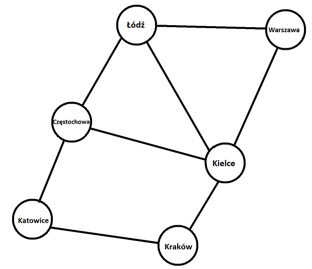
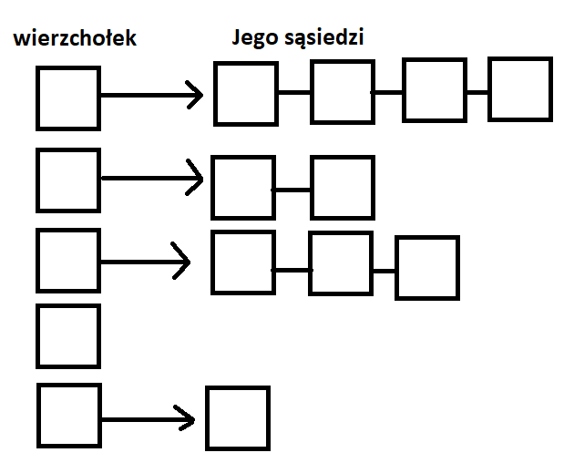
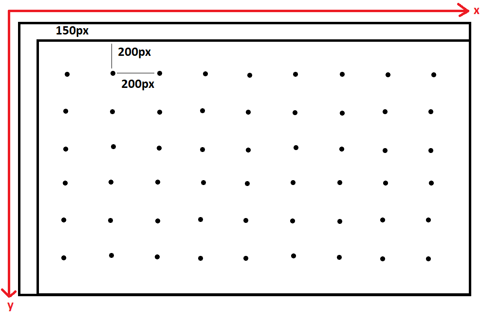
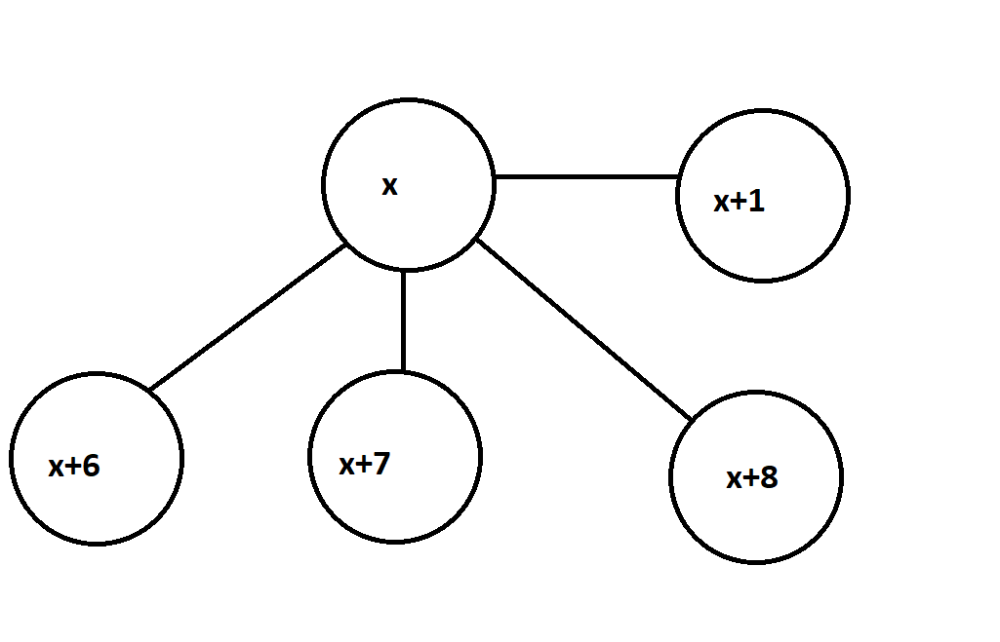
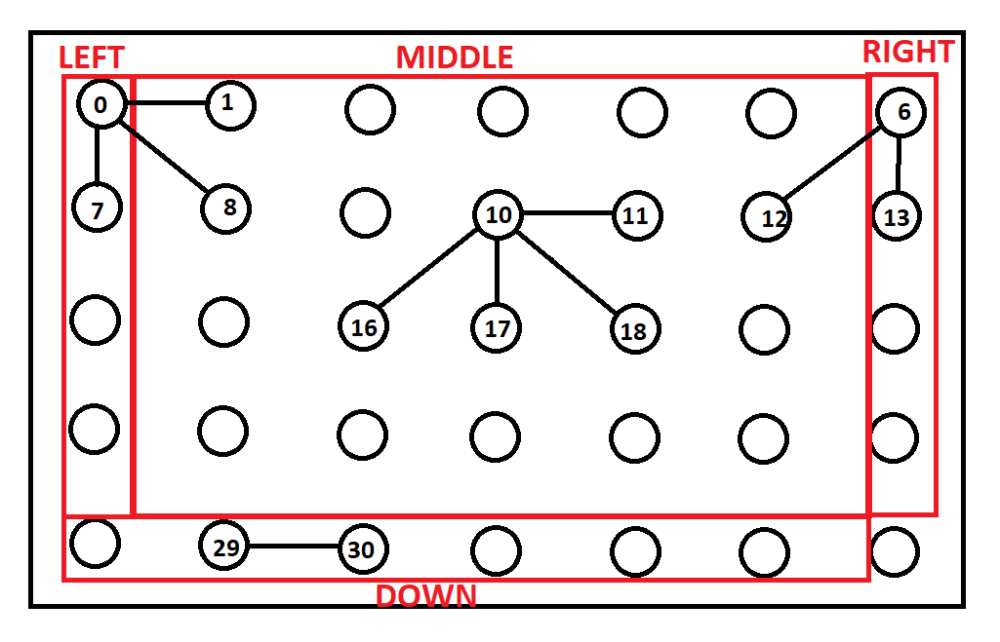

|
Przeszukiwanie grafu metodą BFS
|


|
|
Przeszukiwanie grafu metodą BFS
|
|
Graf jest modelem zbioru połączeń, przedstawiający relacje między obiektami, składa się z wierzchołków oraz krawędzi.
Wierzchołki grafu mogą być ponumerowane lub nazwane i czasem stanowia reprezentacje jakichś obiektów. Krawędzie natomiast reprezentują relacje między takimi obiektami np.

Jak widać Wierzchołki reprezentują miasta, natomiast krawędzie drogi między nimi.
Algorytm BFS(ang. breadth-first search) odpowiada na dwa pytania:
graf w naszym programie jest reprezentowany za pomocą listy sąsiedztwa. Lista ta przechowuje informacje o połączeniach z kolejnymi wierzchołkami.

W naszym wypadku najpierw stworzyliśmy liste wskaźników, które przechowywują wskaźnik na liste sąsiedztwa.
Aby ułatwić sobie umieszczanie elementów na plaszy, powstała funkcja get_real_position_on_board(int position) plansza posiada margines 150px oraz każdy punkt jed oddalony od siebie o 200px

Skoro wszystkie krawędzie są dwukierunkowe oraz mają być generowane między najbliższym sąsiadem to istnieją maksymalnie 4 krawędzie warte rozpatrzenia. Jeżeli za id wylosowanego wierzchołka uznamy x to jego najbliżsi sąsiedzi mają id odpowiednio x+1, x+6, x+7. x+8.

Nie wszystkie wierzchołki mogą mieć 4 krawędzie do wylosowanie, aby zatem zydentyfikować je, należy zsumować jego najbliższych sąsiadów.

Z tego wynika że suma id wierzchołków grupy:
Losowanie polega na: